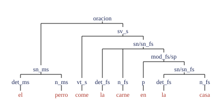
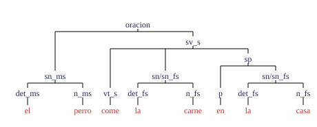

| Integrante | Carné |
|---|---|
| Carlo Enrique Guerra Vega | 00052220 |
| Kelvin Rodrigo Iraheta Morales | 00083121 |
| Allan Josué López Escalante | 00049222 |
| Federico Josué Calderón Durán | 00215818 |
Una gramática libre de contexto (CFG) describe con exactitud la sintaxis de un lenguaje de programación como C, pero se queda corta con el español. Este informe busca el punto exacto de esa frontera. Primero implementamos en Python un parser para un subconjunto de C (mini-C). Después extendimos la CFG al español, con concordancia de género y número, relativas y modificadores, y registramos cada falla y su causa. Por último, procesamos las mismas oraciones con spaCy para contrastar la gramática formal con un modelo estadístico.
Una gramática formal es un conjunto de reglas que dice qué cadenas de símbolos pertenecen a un lenguaje. Tiene cuatro partes: los terminales, que son las palabras o símbolos que aparecen en el texto final (el, perro, if, ;); los no terminales, que son categorías abstractas (oracion, sn para sintagma nominal, sv para sintagma verbal); las producciones, reglas de la forma A → α que indican cómo reemplazar una categoría por una secuencia de símbolos; y un símbolo inicial. Generar una cadena es aplicar producciones hasta que solo quedan terminales; esa secuencia es una derivación:
oracion ⇒ sn sv ⇒ det n sv ⇒ el n sv ⇒ el perro sv ⇒ el perro v ⇒ el perro come
La derivación se dibuja como un árbol sintáctico: la raíz es el símbolo inicial, cada nodo interno es una categoría y las hojas, leídas de izquierda a derecha, forman la oración. El lenguaje de la gramática es el conjunto de todas las cadenas que puede generar. Si una cadena tiene más de un árbol, es ambigua. Un parser hace el proceso inverso: recibe una cadena y busca su árbol; si no lo encuentra, la rechaza.
Un autómata es una máquina abstracta que lee una cadena símbolo por símbolo y al final responde «sí» o «no». Los autómatas se distinguen por la memoria que tienen. Un autómata finito solo recuerda en qué estado está, de una lista fija. Un autómata de pila tiene además una pila: puede apilar símbolos y sacarlos después, siempre empezando por el último que entró. Con ella puede contar, por ejemplo, cuántos paréntesis abrió para verificar que se cierren todos.
Chomsky (1956) clasificó las gramáticas en cuatro tipos según cuánto se restringen sus producciones. Mientras más libres son las reglas, más lenguajes describen, pero se necesita una máquina más poderosa para reconocerlos (Hopcroft, Motwani y Ullman, 2007). En la Tabla 1, las mayúsculas (A, B) son no terminales, las minúsculas (a) son terminales y las letras griegas (α, β, γ) son secuencias de cualquier tipo de símbolo.
La notación anbn significa «n letras a seguidas de exactamente n letras b» (ab, aabb, aaabbb…), y { ww } es el lenguaje de las cadenas formadas por una secuencia repetida dos veces (abab, abcabc…). Un autómata finito no reconoce anbn porque tendría que recordar un número que no tiene límite. Uno de pila sí: apila una marca por cada a y saca una por cada b. En cambio, anbncn ya es demasiado para una pila: al comparar las b con las a, la pila queda vacía y no le queda nada para comparar las c. En una gramática libre de contexto (CFG, Tipo 2), cada no terminal se reemplaza igual sin importar lo que lo rodea; en una sensible al contexto (Tipo 1), el reemplazo puede depender de los símbolos vecinos.
| Tipo | Gramática | Forma de las producciones | Autómata | Ejemplo de lenguaje |
|---|---|---|---|---|
| 3 | Regular | A → aB o A → a | Autómata finito | identificadores, números: [A-Za-z_]\w* |
| 2 | Libre de contexto | A → α (un solo no terminal a la izquierda) | Autómata de pila | anbn; paréntesis balanceados |
| 1 | Sensible al contexto | αAβ → αγβ, con |γ| ≥ 1 | Autómata linealmente acotado | anbncn; { ww } |
| 0 | Sin restricciones | α → β | Máquina de Turing | lenguajes recursivamente enumerables |
La sintaxis de un lenguaje de programación se diseña para ser libre de contexto. Su estructura es de anidamiento puro: bloques dentro de bloques, expresiones dentro de paréntesis, un else que se empareja con un if. La pila de un autómata de pila resuelve justamente eso. Además, el diseñador puede eliminar la ambigüedad (precedencia de operadores, regla del else más cercano) y escribir la gramática de modo que se analice en tiempo lineal, por ejemplo con un parser LL(1), que lee de izquierda a derecha y decide qué regla aplicar mirando solo el siguiente símbolo. Lo que una CFG no expresa, como declarar una variable antes de usarla o que los tipos coincidan, se delega al análisis semántico mediante la tabla de símbolos (Aho et al., 2006).
La herramienta principal es el lema de bombeo para lenguajes libres de contexto. La idea es esta: si una cadena es suficientemente larga, su árbol sintáctico es tan alto que en algún camino de la raíz a una hoja se repite un mismo no terminal. El trozo de cadena que genera esa categoría repetida se puede volver a insertar, o «bombear», cuantas veces se quiera, y el resultado sigue perteneciendo al lenguaje. Formalmente: si L es libre de contexto, existe una constante p tal que toda cadena z ∈ L con |z| ≥ p puede escribirse como z = uvwxy, con |vwx| ≤ p y |vx| ≥ 1, de modo que uviwxiy pertenece a L para todo i ≥ 0. Aquí |z| es la longitud de z, y v y x son las dos partes que se repiten juntas.
Para demostrar que un lenguaje no es libre de contexto se razona por contradicción: se elige una cadena larga del lenguaje y se muestra que, la dividamos como la dividamos, bombearla produce una cadena que ya no pertenece a él. Así se prueba que anbncn y { ww } no son libres de contexto. Una segunda herramienta es la intersección con un lenguaje regular: si un lenguaje libre de contexto se intersecta con uno regular, el resultado sigue siendo libre de contexto. Por eso, si al intersectar un lenguaje con uno regular se obtiene algo que no es libre de contexto, el lenguaje original tampoco lo era. La sección 5.3 usa ambas herramientas.
Un lenguaje de programación se diseña: su gramática es su definición, y por eso se le quitan la ambigüedad y las excepciones. El español evolucionó, y una gramática solo puede describirlo de forma aproximada (Jurafsky y Martin, 2025). Además, el español tiene tres fenómenos que no existen en la sintaxis de mini-C: ambigüedad constante («come la carne en la casa» admite dos lecturas), concordancia de género y número entre palabras que pueden estar lejos (en «El perro que la gata persigue duerme», el verbo concuerda con «perro») y dependencias entre palabras que pueden anidarse o, en algunos idiomas, cruzarse. Este experimento pone a prueba justamente esos fenómenos.
El subconjunto, aprobado por el docente, incluye declaraciones int/float, asignaciones, if/else, while, bloques, expresiones con precedencia, comparaciones y comentarios. Su gramática, en EBNF:
programa → sentencia* EOF
sentencia → declaracion | asignacion | si | mientras | bloque
declaracion → tipo ID ( '=' expr )? ';' tipo → 'int' | 'float'
asignacion → ID '=' expr ';'
si → 'if' '(' condicion ')' sentencia ( 'else' sentencia )?
mientras → 'while' '(' condicion ')' sentencia
bloque → '{' sentencia* '}' condicion → expr OP_REL expr
expr → termino ( ( '+' | '-' ) termino )*
termino → factor ( ( '*' | '/' ) factor )*
factor → NUM | ID | '(' expr ')'
Decisiones de diseño. (1) No hay recursión por la izquierda: expr → expr '+' termino se reescribió con repetición, porque haría entrar al parser descendente en un bucle infinito. (2) La precedencia se obtiene por niveles: termino agrupa * y / dentro de expr. (3) La gramática es casi LL(1): el primer token de cada sentencia (int, ID, if, while, {…) decide qué regla aplicar. (4) El else colgante, única ambigüedad, se resuelve asociando el else al if más cercano, como en C.
Implementación y pruebas. El lexer (lexer.py) divide el código en tokens con una expresión regular (probando // antes de / y == antes de =). El parser (parser_formal.py) tiene una función por no terminal y devuelve un árbol; en int x = 2 + 3 * 4;, 3 * 4 queda agrupado primero. Ante un error indica la línea, por ejemplo «Línea 1: se esperaba ';'». La suite de pytest pasa los 24 casos: 11 válidos, 10 inválidos (falta de ;, else sin if, llave sin cerrar…) y pruebas de precedencia, else colgante y línea del error. Sobre un lenguaje diseñado para ser libre de contexto, la CFG funciona sin fallas.
Para el español se escribió un motor genérico (motor.py) que recibe cualquier gramática como diccionario de Python y busca con backtracking todos los árboles posibles. Si no encuentra ninguno, la oración se rechaza; si encuentra más de uno, es ambigua. Se definieron 20 oraciones de prueba (16 correctas, una de ellas ambigua, y 4 con errores de concordancia) y se probaron en dos etapas.
Gramática base (7 no terminales, 22 producciones): oracion → sn sv, sn → det n | det n adj, sv → v | v sn, más el léxico. Acierta 9 de 20: acepta «La perro come» porque no controla la concordancia, y rechaza adverbios, frases preposicionales y relativas porque no tiene reglas para ellos.
Gramática extendida (34 no terminales, 93 producciones). La concordancia se codifica dividiendo cada categoría según sus rasgos: sufijos _ms, _fs, _mp, _fp para género y número, y _s, _p para el número del verbo. Se agregaron relativas de sujeto y de objeto, adverbios y sintagmas preposicionales:
oracion → sn_ms sv_s | sn_fs sv_s | sn_mp sv_p | sn_fp sv_p
sn_ms → det_ms n_ms mod_ms
mod_ms → ε | adj_ms | sp | adj_ms sp | rel_suj_s | rel_obj
| adj_ms rel_suj_s | adj_ms rel_obj
rel_suj_s → 'que' sv_s
sv_s → v_s | v_s adv | v_s sp | vt_s sn | vt_s sn sp | …
Con ella se aciertan las 20 oraciones. «El perro que come la carne duermen» se rechaza porque oracion → sn_ms sv_s exige el verbo principal en singular aunque haya una relativa en medio. «El perro come la carne en la casa» recibe dos árboles, porque el sintagma preposicional puede depender del verbo o del objeto (Figura 1).


Costo de la concordancia. Para separar ese costo del de agregar construcciones, se generó automáticamente una versión de control con las mismas construcciones y las mismas 25 palabras, pero con las categorías de género y número fusionadas:
| Versión | No term. | Producciones | Aciertos |
|---|---|---|---|
| Base | 7 | 22 | 9/20 |
| Extendida sin concordancia | 15 | 48 | 16/20 |
| Extendida con concordancia | 34 | 93 | 20/20 |
Solo la concordancia agrega 45 producciones (de 48 a 93): la gramática casi se duplica para rechazar cuatro oraciones. Las 8 alternativas de mod se repiten para cada una de las 4 combinaciones de género y número (32 reglas), y cada rasgo nuevo (persona, tiempo) volvería a multiplicarlas. Sigue siendo una CFG de Tipo 2: el problema es de costo de especificación, no de poder expresivo.
Como las 20 oraciones ya no fallaban, se probaron 24 casos adicionales sin agregar reglas. La gramática acierta 14: rechaza correctamente las 3 inválidas, pero también rechaza 10 oraciones correctas.
| Fenómeno que la rompe | Casos | Ejemplos (rechazados siendo correctos) | Regla implicada | Nivel de Chomsky |
|---|---|---|---|---|
| Vocabulario ausente | 3 | «duerme con la gata», «negro y grande», «negro pequeño» | p → 'en'; léxico de adj | Tipo 2: ampliable |
| Construcción no implementada | 4 | «no duerme», «muy negro», «persigue a la gata», «porque la gata come» | sv_*, mod_* | Tipo 2: ampliable |
| Coordinación | 2 | «El perro come y la gata duerme», «El perro y la gata duermen» | oracion, sn | Tipo 2: ampliable |
| Preprocesamiento | 1 | «¿El perro duerme?» | El motor no quita ¿ ? | No es un salto de nivel |
| Ambigüedad estructural | (1) | «come la carne en la casa» (aceptada con 2 árboles) | sp en sv_s o en mod_fs | Tipo 2: una CFG la representa |
Ninguna de estas fallas demuestra que el español exceda a las CFG: todas se corrigen agregando producciones, y la concordancia tampoco las excede, porque sus rasgos son finitos (dos géneros, dos números). La gramática acepta «La carne negra duerme» porque la sintaxis no verifica el significado; eso es semántica, no otro nivel de la jerarquía. En cambio, «El perro duerme la carne» se considera incorrecta y se rechaza: rompe la subcategorización del verbo, porque «dormir» es intransitivo y no admite objeto directo. Esa restricción sí es sintáctica: la gramática separa v_s (intransitivos) de vt_s (transitivos).
En «El perro que la gata persigue duerme», la dependencia interna (gata ↔ persigue) se abre y se cierra dentro de la externa (perro ↔ duerme). Al encadenar relativas se obtiene sujeto1 sujeto2 sujeto3 verbo3 verbo2 verbo1, un patrón de la forma anbn. Una pila lo reconoce porque el último sujeto que entra es el primer verbo que sale. Por eso la gramática extendida maneja bien la concordancia dentro de las relativas.
El límite aparece cuando las dependencias se cruzan (A1 A2 B1 B2): el primero que entra debe ser el primero que sale, y una pila devuelve el último. En español, «Juan y Ana son alto y alta, respectivamente» lo ilustra: si la lista no tiene límite, los géneros de los adjetivos deben copiar los de los sustantivos, lo que forma el lenguaje { ww }. Sin embargo, este ejemplo no se acepta como prueba, porque no está claro que esa concordancia sea sintáctica (Pullum y Gazdar, 1982). La prueba aceptada es la de Shieber (1985) sobre el alemán suizo, donde los objetos y los verbos que los rigen aparecen cruzados y el caso gramatical (acusativo o dativo) obliga a emparejarlos. Al intersectar ese fragmento con un lenguaje regular se obtiene L = { ambncmdn }.
L no es libre de contexto. Supongamos que lo es, con constante de bombeo p, y tomemos z = apbpcpdp. Como |vwx| ≤ p, el tramo bombeado toca a lo sumo dos bloques vecinos, y nunca a la vez las a y las c ni las b y las d. Al bombear con i = 2, como |vx| ≥ 1, cambia la cantidad de al menos una letra y, como mucho, de dos letras vecinas, mientras que L exige que las a y las c (o las b y las d) cambien juntas. Si v o x mezclan letras, además se rompe el orden de los bloques. Es una contradicción. Como los lenguajes libres de contexto son cerrados bajo intersección con regulares, el alemán suizo tampoco puede ser libre de contexto. ∎
Estas dependencias caen en los lenguajes ligeramente sensibles al contexto (Joshi, 1985), entre el Tipo 2 y el Tipo 1. Si «respectivamente» se limita a k elementos, una CFG puede cubrirlo enumerando las 2k combinaciones de género, con una explosión exponencial de reglas; sin cota, ninguna CFG alcanza.
Se procesaron las mismas oraciones con spaCy 3.8 (Honnibal et al., 2020) y el modelo es_core_news_md, que asigna a cada palabra una categoría, sus rasgos (género, número) y una relación de dependencia con otra palabra. spaCy nunca rechaza una oración, así que definimos un criterio externo: «rechaza» cuando sus propios rasgos muestran un desacuerdo de género o número dentro del grupo nominal o entre sujeto y verbo.
| Medida | CFG (20) | spaCy (20) | CFG (24) | spaCy (24) | CFG (44) | spaCy (44) |
|---|---|---|---|---|---|---|
| Aciertos totales | 20/20 | 19/20 | 14/24 | 22/24 | 34/44 | 41/44 |
| Correctas aceptadas | 16/16 | 16/16 | 11/21 | 20/21 | 27/37 | 36/37 |
| Incorrectas rechazadas | 4/4 | 3/4 | 3/3 | 2/3 | 7/7 | 5/7 |
| Referencia: aceptar todo | 16/20 | 21/24 | 37/44 | |||
La exactitud sola engaña: como 37 de las 44 oraciones son correctas, aceptar todo ya acierta 37/44, más que la CFG. Separando los aciertos se ve el resultado real: la CFG nunca acepta una incorrecta (7/7), pero cubre poco (27/37); spaCy cubre casi todo (36/37), pero deja pasar «La perro come» y «El perro duerme la carne». Su único rechazo indebido, «El perro y la gata duermen», es un fallo de nuestro criterio: compara «perro» con «duermen» sin ver que el sujeto coordinado es plural.
Qué captura spaCy que la CFG no: cobertura, porque procesa 9 de las 10 correctas que la CFG rechaza («no duerme», «persigue a la gata»), y diagnóstico, porque en las incorrectas señala qué palabras no concuerdan, mientras la CFG solo dice «rechazada». Qué captura la CFG que spaCy no: rechazo, porque spaCy no distingue por sí mismo lo correcto de lo incorrecto; estructura, porque en las 4 relativas spaCy elige el sustantivo como raíz y en «El perro que come duerme.» etiqueta «duerme» como adjetivo; ambigüedad, porque la CFG muestra los dos árboles y spaCy elige uno sin avisar; e independencia de la forma superficial: por la mayúscula de «El», spaCy toma «perro» por nombre propio y no detecta «La perro come», y sin el punto final sí reconoce «duerme» como verbo. A la CFG no le afectan ni la mayúscula ni el punto.
Las 44 oraciones las escribió el equipo con 25 palabras, así que no representan el español real. La muestra es pequeña y desbalanceada (7 incorrectas y 37 correctas), el criterio de rechazo de spaCy es nuestro y tiene un fallo conocido, y se probó un solo modelo. Versiones y comandos para reproducir cada resultado: README del repositorio, github.com/iamcarlogg/ProyectoTLP2026.
Aho, A. V., Lam, M. S., Sethi, R. y Ullman, J. D. (2006). Compilers: Principles, Techniques, and Tools (2.ª ed.). Addison-Wesley.
Chomsky, N. (1956). Three models for the description of language. IRE Transactions on Information Theory, 2(3), 113–124.
Honnibal, M., Montani, I., Van Landeghem, S. y Boyd, A. (2020). spaCy: Industrial-strength Natural Language Processing in Python. Zenodo.
Hopcroft, J. E., Motwani, R. y Ullman, J. D. (2007). Introduction to Automata Theory, Languages, and Computation (3.ª ed.). Pearson.
Joshi, A. K. (1985). Tree adjoining grammars: How much context-sensitivity is required to provide reasonable structural descriptions? En D. Dowty, L. Karttunen y A. Zwicky (Eds.), Natural Language Parsing. Cambridge University Press.
Jurafsky, D. y Martin, J. H. (2025). Speech and Language Processing (3.ª ed., borrador). Stanford University.
Pullum, G. K. y Gazdar, G. (1982). Natural languages and context-free languages. Linguistics and Philosophy, 4(4), 471–504.
Shieber, S. M. (1985). Evidence against the context-freeness of natural language. Linguistics and Philosophy, 8(3), 333–343.